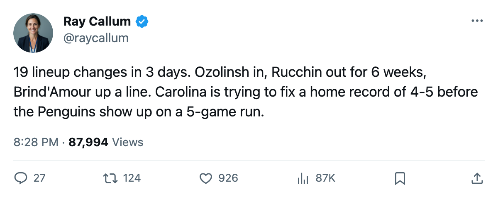
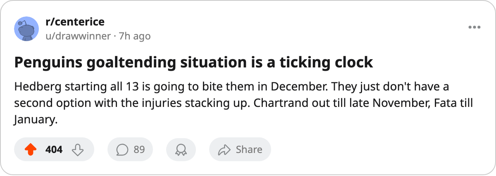

Morning Skate Notes: Carolina Made 19 Lineup Changes in 3 Days
Sandis Ozolinsh is in, Steve Rucchin is out until December, and the 2-game-slump Hurricanes host Pittsburgh's 5-game streak tonight
 Ray CallumSenior correspondent · Home Ice Network
Ray CallumSenior correspondent · Home Ice Network Carolina Hurricanes logged 19 lineup changes since the previous edition, adding
Carolina Hurricanes logged 19 lineup changes since the previous edition, adding  Sandis Ozolinsh87 to the top defensive pairing and removing
Sandis Ozolinsh87 to the top defensive pairing and removing  Steve Rucchin78 after an elbow designation that keeps him out until 2005-12-19. The Hurricanes host
Steve Rucchin78 after an elbow designation that keeps him out until 2005-12-19. The Hurricanes host  Pittsburgh Penguins tonight, a first meeting between these clubs this season.
Pittsburgh Penguins tonight, a first meeting between these clubs this season.
The net roster changes are 3 in and 3 out. Ozolinsh, who was not even dressed on Nov 6, now occupies the left-side slot on the top pair with 1 first-line power play assignment.  Ben Clymer73 and Brad DeFauw74 join the fourth line at right wing and left wing. Tomas Malec72,
Ben Clymer73 and Brad DeFauw74 join the fourth line at right wing and left wing. Tomas Malec72,  Jeff Heerema74, and Rucchin are off.
Jeff Heerema74, and Rucchin are off.
On the back end,  Mathieu Dandenault77 moved from the left side of every pairing to the right side across all five slots.
Mathieu Dandenault77 moved from the left side of every pairing to the right side across all five slots.  Sean Hill77 dropped to the second pair's left side, which is his third separate injury designation this season (none of the three carried a named body part).
Sean Hill77 dropped to the second pair's left side, which is his third separate injury designation this season (none of the three carried a named body part).  Danny Markov75 shifted his right-side pairing assignment one slot up.
Danny Markov75 shifted his right-side pairing assignment one slot up.
On the forward groups,  Rod Brind'Amour82 moved from third-line center to second,
Rod Brind'Amour82 moved from third-line center to second,  Boyd Devereaux73 from fourth to third, and
Boyd Devereaux73 from fourth to third, and  Radek Dvorak79 down to the fourth-line center slot.
Radek Dvorak79 down to the fourth-line center slot.  Jeff O'Neill86 lost his first-line right wing on the top power play unit and now splits between second-line left wing and fourth-line center.
Jeff O'Neill86 lost his first-line right wing on the top power play unit and now splits between second-line left wing and fourth-line center.
The medical ledger says 11 spells and 77 days
Rucchin (elbow, returns Dec 19) is Carolina's 11th designated injury this season. The Hurricanes have lost 77 total days to the IR, 6th most in the league. Brad DeFauw and Ben Clymer are both making their first dressed appearances of the season.
The Hurricanes are 4-6-2, 14 points, sitting 8th in the East on the conference table and holding the last playoff spot by a margin of 1 point. They have allowed 41 goals in 14 games. Their home record is 4-5.
Pittsburgh arrive on a 5-game winning streak with a 6-2-0 record and 20 points, 3rd in the East. The Penguins are 4-1 on the road. Head coach Eric Lippmann told The Tunnel this week that the first period has been where his team struggled: "Two of those two losses we gave up the first one and chased. The guys are finding it."
 Johan Hedberg86 has started all 12 of Pittsburgh's games. He will make his 13th consecutive appearance tonight. The Penguins have scored 37 goals against 30 allowed, and their 12-game sample has produced no overtime results.
Johan Hedberg86 has started all 12 of Pittsburgh's games. He will make his 13th consecutive appearance tonight. The Penguins have scored 37 goals against 30 allowed, and their 12-game sample has produced no overtime results.
Tonight's game at Raleigh is the first of two scheduled meetings this season.

